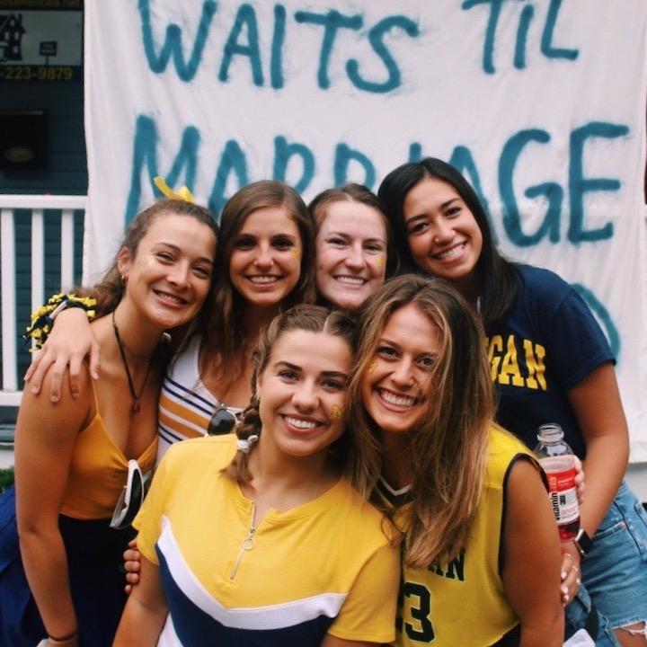
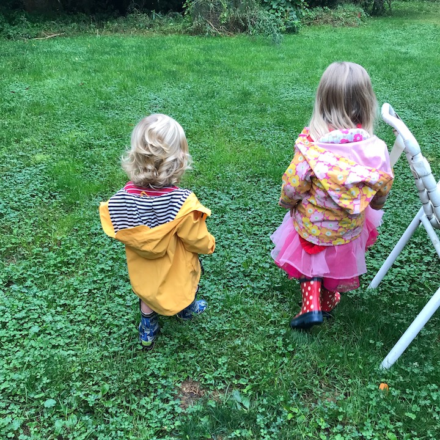
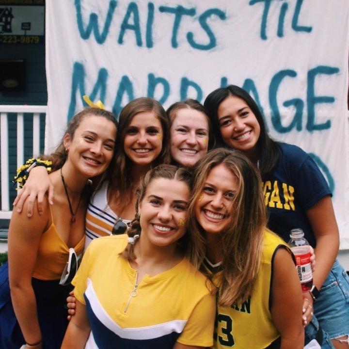
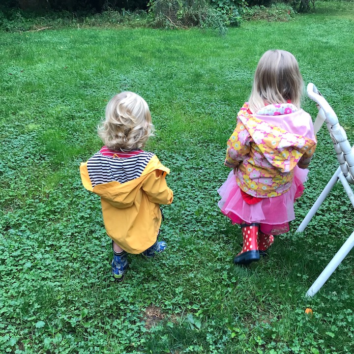

Anna Groffsky
Hi! My name is Anna Groffsky and I am a junior in the School of Information at the University of Michigan. I am pursuing a BS in Information with a focus in Social Media Analysis and Design and a sub focus in UX Design. Through relevant coursework and internships, I have acquired a combination of experiences in social media strategy and research tactics. I am passionate about the intersection between technology, marketing strategy and psychology. Through this webpage, you will get to learn more about me. I am very proud of my work experience, extremely passionate about my extracurriculars, and very attached to places I've lived. I also love to travel, eat, and spend time with friends and family which you will get a glimpse of in my image gallery. Enjoy!
Work Experience
Revive Consulting+
Marketing Intern
Revive Consulting+ is a consulting firm that helps create growth and transition solutions for financial advisors with an ESG emphasis. I started as an intern in January 2019 and have assumed many roles including rebranding the company website, maintaining relationships with clients and hiring new interns. My main role has been social media strategy and content creation for the company's LinkedIn and Twitter pages.
Michigan Summer in Cognitive and Early Development (MSPICED)
Research Assistant Intern
MSPICED is a summer internship program in which interns are placed in 1 of 4 labs and gain exposure to cutting-edge research. As interns, we conducted studies, did data analysis and helped recruit and schedule participants. We also had weekly meetings and reading groups to learn more about current psychological research. I was placed in the Social Minds Lab which studies how children develop a sense of cooperation, fairness, trust and teamwork. The image is my poster I presented at a symposium, exemplifying the research and preliminary results of the study I was placed on.
National Beverage Corporation
Brand Ambassador/Educator
La Croix released a new line of flavors, NiCola, containing 4 new flavors inspired by Cuba: Coffea Exotica, Cubana, La Cola, and Coconut Cola. Because these flavors are so new, La Croix marketing managers hired myself along with 10 other brand ambassadors to promote the new products through brand education, advertising, and product sampling.

Extracurriculars
MUSIC Matters
Head of Grassroots Fundraising
MUSIC Matters is a student-run non-profit organization that promotes educational opportunities and unites the community through the power of music. We put on engaging local music events throughout the year that are then capped off with our key event, SpringFest, centralized around themes of inclusivity and community. All the proceeds from our events go towards our 3 social ventures that focus on youth empowerment and education. As Head of Grassroots Fundraising, I am one of 5 leaders within the Fundraising Committee. I lead Giving Blue Day Fundraising strategy to raise over $30,000 as well as oversee my committee members’ coordination of all fundraising events and opportunities.
Delta Gamma, Xi Chapter
VP: Communications
As VP: Communications, I work with on our executive board comprised of 9 team members to lead a chapter of 189 women. My specific duties include documenting all chapter records, communicating chapter expectations through updating and upholding our bylaws, maintaining public relations, and leading our social media branding and apparel teams.
Out of the Darkness
Programming Committee
Out of the Darkness is a student-run chapter of the American Foundation for Suicide Prevention advocating for mental health awareness, raising funds for mental health resources, and organizing an annual suicide prevention walk. On Programming Committee, we use previous walk and chapter funds to host various campus events throughout the year, including Suicide Loss Survivor Group Day, Talk Saves Lives, and Depression Center presentations.
My Life in Places
South Dartmouth, MA
My life began on the East Coast. My first home was in the small village of South Dartmouth, a short drive away from New Bedford. Although I only lived here for 4 months of my life, my family never sold our house, using it as a summer home. We would return for the last month of summer for years. South Dartmouth will forever be my favorite place to escape. With just a 5 minute walk to the beach and a 10 minute walk to the village center, you were never too far from paradise.
Edina, MN
After MA, my family moved to Edina, Minnesota for my dad's work. Although the Minnesota winters took some time to get used to, my family and I fell in love. The part I miss most about Edina is the nature, especially the lakes. In the land of 10,000 lakes, there is no shortage of trails to walk around or lakeside restaurants and ice cream shops.
Ann Arbor, MI
Moving away from home was scary, but in 3 short years, Ann Arbor has been able to feel like home. I love Ann Arbor so much that I decided to spend all spring and summer here too. Some favorite spots of mine include the League, Blank Slate Creamery, and of course, the Big House.
Copenhagen, Denmark
This spring I will be moving to a new place. I have always wanted to study abroad and I am so excited to finally go spend a semester in Europe. I will be going through DIS Copenhagen, studying New Media and Changing Communities. As a huge fan of travelling (which I hope is apparent in the next section of my webpage), I cannot wait to see where this next semester takes me. To learn more about DIS, focus over the beautiful Copenhagen image!

My Life in Pictures


 




Contact
Please feel free to contact me!
Email: groffsky@umich.edu
Phone: (952) 255-9388
LinkedIn